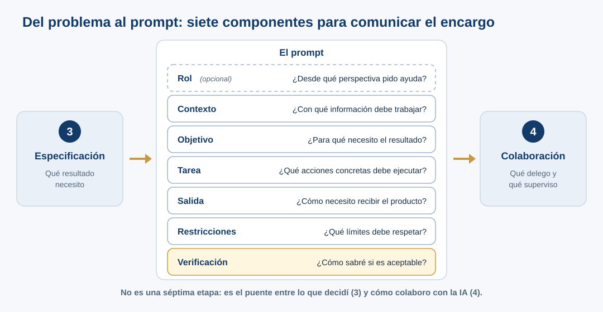

Del problema al prompt: cómo construir instrucciones claras
Durante el taller · lectura de 6 min · actividad de 5–7 min
- El prompt no sustituye la comprensión del problema: comunica lo que ya decidiste.
- Siete componentes: rol (opcional), contexto, objetivo, tarea, salida, restricciones y verificación.
- Una instrucción más detallada da respuestas más fáciles de revisar, no necesariamente más verdaderas.
¿Por qué hablar de prompting en este taller?
En la etapa 3 decidimos qué resultado necesitamos. En la etapa 4 decidimos cómo colaborar con la IA. La estructura del prompt es el puente entre ambas: convierte una necesidad definida en un encargo concreto. No constituye una séptima etapa ni pretende sustituir un curso especializado de prompting científico.
No existe una plantilla universal obligatoria, ni todos sus elementos tienen que aparecer en cualquier consulta. Esta es una herramienta pedagógica flexible, útil cuando una tarea científica tiene incertidumbres, datos propios o consecuencias de publicación.
Siete componentes y su efecto esperado

| Componente | Pregunta que resuelve | Qué puede cambiar en la salida | Precaución |
|---|---|---|---|
| Rol | ¿Desde qué perspectiva pido ayuda? | Terminología, enfoque, profundidad y criterios a considerar | «Actúa como experto» no demuestra competencia ni aporta evidencia ausente. |
| Contexto | ¿Con qué información debe trabajar? | Pertinencia de supuestos y referencias al caso | Contexto incompleto o incorrecto puede propagarse. |
| Objetivo | ¿Para qué necesito el resultado? | Prioridad y dirección de la respuesta | «Hacer FAIR» es demasiado amplio si no se define el alcance. |
| Tarea | ¿Qué acciones concretas debe ejecutar? | Tipo de análisis, pasos y cobertura | Una lista de tareas no autoriza inventar datos. |
| Salida | ¿Cómo necesito recibir el producto? | Estructura, columnas, longitud y posibilidad de revisión | Una tabla impecable puede contener afirmaciones incorrectas. |
| Restricciones | ¿Qué límites debe respetar? | Reducción de transformaciones o afirmaciones no autorizadas | No sustituyen la inspección del resultado. |
| Verificación | ¿Cómo sabré si es aceptable? | Trazas de evidencia, fuentes, incertidumbre y pendientes | Pedir citas no equivale a leer ni contrastar las fuentes. |
En muchas tareas importan más objetivo, contexto, tarea y verificación (criterios de aceptación) que asignar un rol llamativo. El rol es opcional: no hace que el sistema adquiera conocimientos experimentales que no están en el archivo.
Un mismo caso: dos solicitudes
Trabajaremos con el Excel simulado de expresión génica. Tiene dos hojas (los datos y unas notas experimentales parciales), cinco filas de genes, tres columnas de condiciones y una celda vacía; no hay suficiente información para establecer las unidades, el método, las réplicas ni las condiciones experimentales exactas.
A. Solicitud abierta (P0)
Tengo este Excel de expresión génica de cinco filas y tres condiciones. Voy a publicar un artículo y me piden que los datos sigan los principios FAIR. ¿Me ayudas a prepararlo?
Es una consulta auténtica y razonable. La IA puede ofrecer una respuesta útil, pero debe decidir por su cuenta si explicar conceptos, pedir detalles, proponer un plan o producir archivos.
B. Solicitud delimitada
Rol (opcional): Ayúdame desde la perspectiva de gestión de datos científicos.
Contexto: Tengo un Excel simulado de expresión génica con cinco filas de genes y tres condiciones, destinado a un ejercicio sobre FAIR.
Objetivo: Identificar la información que falta antes de preparar un depósito o afirmar cumplimiento FAIR.
Tarea: Revisa encabezados, valores y notas; identifica incertidumbres sobre unidades, condiciones, réplicas y celda vacía.
Salida: Entrega una tabla con asunto, evidencia localizable en hoja/celda, información por confirmar, siguiente acción y responsable propuesto.
Restricciones: No inventes unidades, tratamientos, cepa, métodos, réplicas ni el significado de «prom.». No sustituyas celdas vacías por cero ni modifiques los datos.
Verificación: Separa lo observado de las inferencias y de lo que requiere consulta externa. Indica qué habría que verificar y dónde; no declares una verificación que no realizaste.
La segunda versión no es una respuesta al problema: es una mejor delimitación del encargo. Esperamos una salida más fácil de revisar, no necesariamente más verdadera. Comparar dos ejecuciones ilustra diferencias, pero no es una prueba controlada de causalidad.
Cómo aislar los efectos de algunos componentes
Imagina que ya proporcionaste el Excel y una tarea breve: «Revisa los datos y dime qué falta».
| Cambio en la instrucción | Cambio que buscarías al comparar las respuestas |
|---|---|
| Añadir objetivo («necesito un diagnóstico preliminar, no archivos para publicar») | ¿La IA evita entregar un supuesto paquete de publicación? |
| Añadir salida («tabla de cuatro asuntos con evidencia») | ¿Se vuelve más sencillo revisar cada afirmación? |
| Añadir restricciones («no inventes unidades ni réplicas») | ¿Distingue lo conocido de lo pendiente? |
| Añadir verificación («indica celdas y fuentes aún no consultadas») | ¿Es más claro qué observó y qué habría que contrastar externamente? |
Estos son efectos esperados que debemos observar, no resultados garantizados. Las respuestas pueden variar entre ejecuciones y modelos.
Actividad breve · 5–7 minutos
Propósito: reconocer cómo una instrucción hace visible la intención científica y facilita evaluar el trabajo de la IA. No necesitas ejecutar siete prompts.
- Relee P0 e identifica los elementos que ya contiene, aunque no tengan etiquetas.
- En parejas (en línea: en sala separada o por el chat de la reunión), escribe una versión mejorada con objetivo + tarea + salida + una restricción + un criterio de verificación. Decide si necesitas añadir un rol; justifica por qué.
- Subraya qué información proviene del Excel y cuál debe obtenerse de una persona o una fuente primaria.
- Compara tu texto con la versión B. Probarlo en un chat nuevo queda para el final de la práctica, si sobra tiempo.
- En tu bitácora anota una decisión de Description, una de Delegation y un criterio de Discernment.
Pregunta para discutir: si un prompt solicita «una tabla con citas», ¿qué responsabilidad científica conserva la persona que la utilizará?
Comprobar la correspondencia entre cada afirmación, su evidencia y la fuente efectiva, y mantener la responsabilidad sobre los datos y su publicación.
Errores frecuentes
- Creer que mencionar un rol experto garantiza exactitud.
- Confundir objetivo («preparar datos para publicación») con tarea inmediata («diagnosticar información faltante»).
- Pedir una salida convincente sin fijar criterios de revisión.
- Exigir «fuentes» y dar por hecho que el modelo las leyó o que respaldan exactamente la afirmación.
- Escribir restricciones pero omitir la verificación humana e independiente.
- Tratar el prompt como un texto fijo: se puede revisar conforme aprendemos y delimitamos el problema.
Conexión con AI Fluency 4D
| Competencia | Pregunta práctica en este ejercicio |
|---|---|
| Delegation | ¿Qué puede hacer la IA y qué información debe confirmar la investigadora? |
| Description | ¿Expresé contexto, objetivo, tarea, salida y límites de forma suficiente? |
| Discernment | ¿Puedo revisar la evidencia y detectar afirmaciones injustificadas? |
| Diligence | ¿Conservo datos originales, registro decisiones y no presento como verificado lo pendiente? |
Continúa con el caso FAIR y la práctica guiada. Las técnicas de prompting se tratan con más detalle en el curso Prompting científico con inteligencia artificial [R9]: aquí nos concentramos en especificar bien una necesidad científica y comprobar la respuesta.